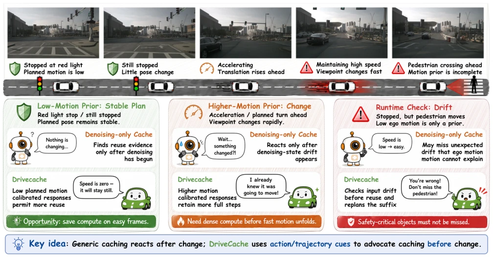
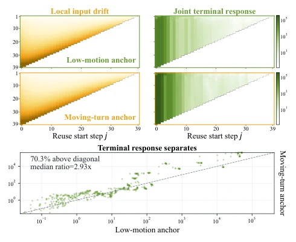
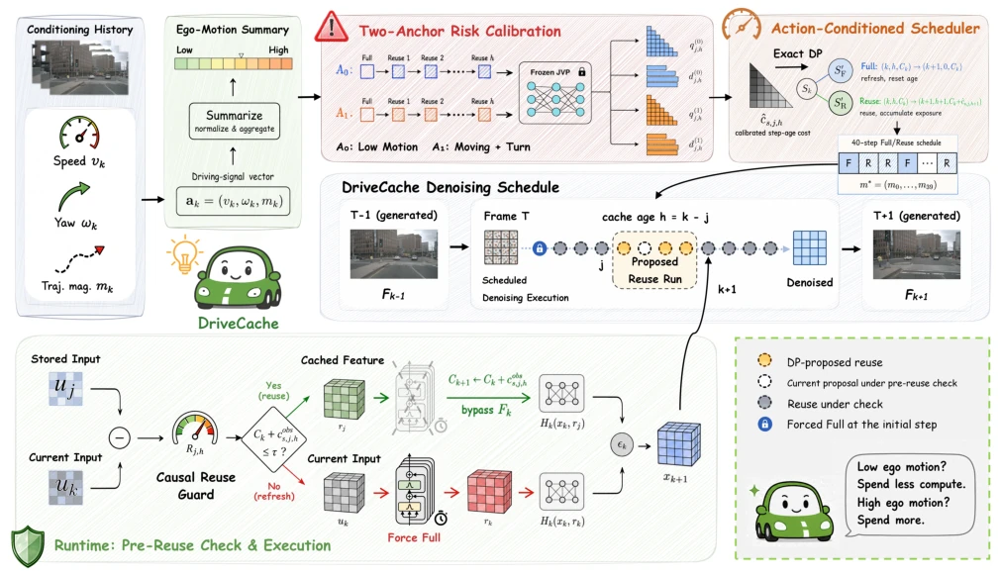
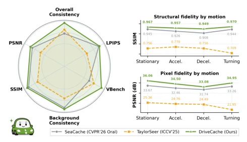
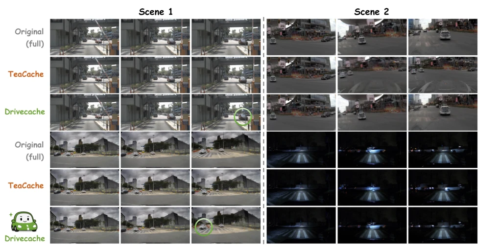

This paper adds an "action-aware" patch to the inference acceleration of autonomous driving world models (World Model). The core logic of DriveCache is actually quite simple: since we know where the car is going to drive before driving (ego motion), why blindly calculate every step when generating video? The authors found that different driving actions (straight vs. turn) have different tolerances for caching, so they developed a dual-anchor calibration plus dynamic programming (DP) scheduler. Although claimed to be "training-free", that calibration process still requires running full inference several times, does it count as disguised training? Moreover, it is essentially caching acceleration for Diffusion models, not solving the root problem of Diffusion's slow sampling itself. However, it indeed achieved 2x speed on Wan2.2 and Epona, and PSNR increased; for autonomous driving development needing massive generated data, this "free" compute power improvement is indeed attractive. Just don't know if the planner itself is inaccurate, whether this "action-aware" will become "action-misleading". In addition, this method relies on predefined budget, lacks adaptive adjustment for generation quality uncertainty, belonging to typical "accurate calculation but not smart enough".
研究动机Motivation
自动驾驶视频生成模型（如 Gaia-1 [Hu et al. 2023]、Drivedreamer [Wang et al. 2024a]）依赖扩散模型预测未来场景，但迭代去噪导致推理延迟高，限制了在线规划和离线数据生成。现有的扩散加速缓存方法（如 TeaCache [Liu et al. 2025a]、EasyCache [Zhou et al. 2025]）多基于通用信号或固定调度，忽略了驾驶生成特有的“先验动作信号”。在生成前，系统已知自车速度、规划轨迹等，这些信号能预测场景视角变化对缓存的容忍度。现有方法未利用这些 pre-generation 信号，导致缓存策略与驾驶动态不匹配。例如，静止和转弯场景的缓存误差差异巨大，通用调度无法自适应。因此，需要一种能结合规划动作与去噪进度的感知缓存控制器，在预算内最大化复用，同时保证生成质量。
Autonomous driving video generation models (such as Gaia-1 [Hu et al. 2023], Drivedreamer [Wang et al. 2024a]) rely on diffusion models to predict future scenes, but iterative denoising leads to high inference latency, limiting online planning and offline data generation. Existing diffusion acceleration caching methods (such as TeaCache [Liu et al. 2025a], EasyCache [Zhou et al. 2025]) are mostly based on generic signals or fixed scheduling, ignoring the "prior action signals" specific to driving generation. Before generation, the system knows ego vehicle speed, planning trajectory, etc., these signals can predict the tolerance of scene view changes to caching. Existing methods do not utilize these pre-generation signals, leading to a mismatch between caching strategy and driving dynamics. For example, the caching error difference between static and turning scenes is huge, generic scheduling cannot adapt. Therefore, a perception caching controller that combines planning actions and denoising progress is needed, maximizing reuse within budget while ensuring generation quality.

Figure 2: Motivation of DriveCache. Planned ego motion reveals scene-dependent cache tolerance before denoising.

Figure 3: Planned ego motion changes joint run responses even when local input drift remains nearly unchanged.
The overall process of DriveCache is divided into four stages. First, use two ego motion anchors (low motion anchor, moving turn anchor) to measure the terminal response of continuous reuse, interpolating the response of the current scene through planned ego motion (translation and rotation). Second, use Exact DP to select reuse count and position within the response budget, maximizing the number of skipped evaluations. Finally, introduce Causal Drift Check, measure input drift before inference, if exceeding threshold refresh cache and replan remaining steps. Specifically, the method models caching decision as causal decision, observing input before backbone network evaluation. Through z-score standardization of planned motion statistics, map the scene to the calibration support range. For each scene, calculate joint running response, convert it to monotonic envelope and incremental cost. Dynamic programming recursively calculates minimum cumulative response, ensuring legality constraints (such as maximum cache age). State transition equation defines cost trade-off between full evaluation and reuse, ensuring finding optimal path under budget constraints. During inference, accumulated charge tracks budget, drift check as veto mechanism, preventing cache error diffusion. This method requires no training, relying only on one model-level calibration.

Figure 4: DriveCache combines planned ego motion, two-anchor run calibration, exact DP, and a causal reuse guard.
Experiments were conducted on Wan2.2 (5B, A14B) and Epona models, using DrivingGen and nuScenes datasets. Baselines include caching methods such as TeaCache, EasyCache, MagCache, and fixed step sampling. Evaluation metrics cover PSNR, SSIM, LPIPS, and trajectory quality (Traj., ADE, DTW). Results show DriveCache achieved 1.84x speedup on Wan2.2 5B, PSNR reached 34.744 dB, better than TeaCache's 32.874 dB; achieved 1.97x speedup on A14B. Ablation studies show removing motion prior or fixed placement leads to significant quality drop, drift veto mechanism effectively prevents scheduling drift. Additionally, achieved 1.89x speedup on Epona, verifying cross-model generalization. Trajectory error (ADE/DTW) also significantly reduced, proving caching did not break motion consistency. Calibration process takes only a few minutes, inference overhead increase less than 0.7%.

Figure 1: DriveCache achieves better video fidelity and con- sistency across evaluation metrics.

Figure 5: Qualitative comparison of full inference, TeaCache, and DriveCache.